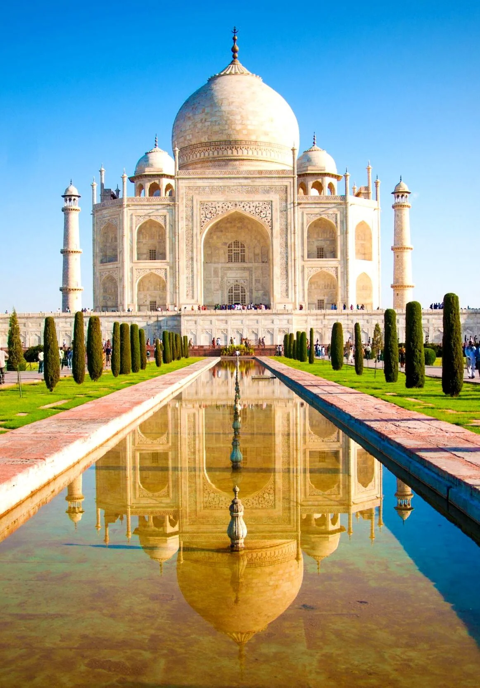
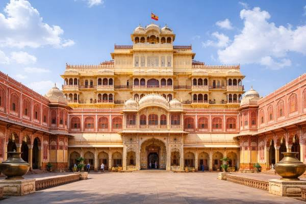
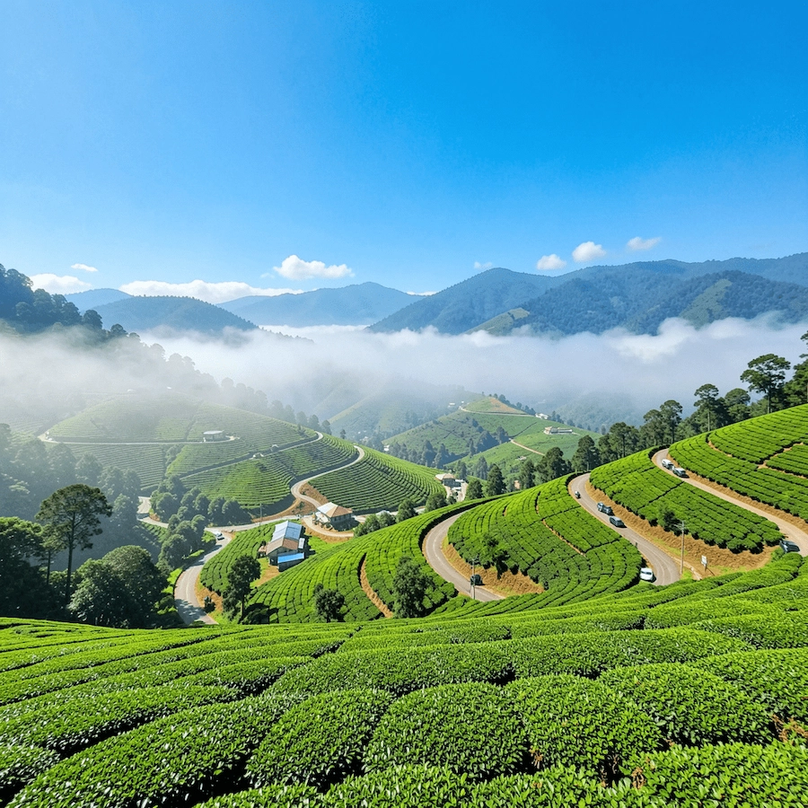
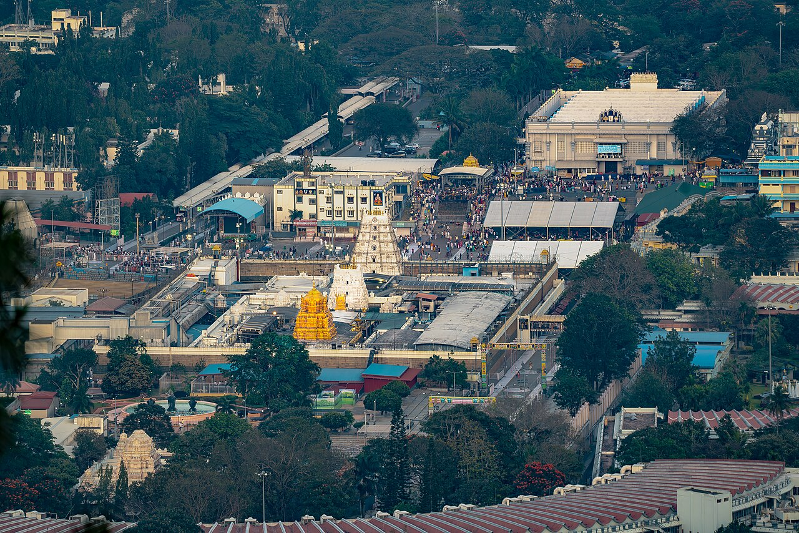
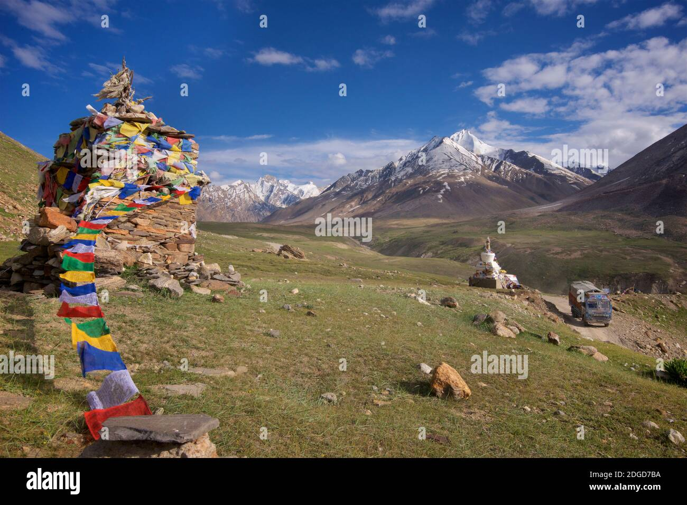
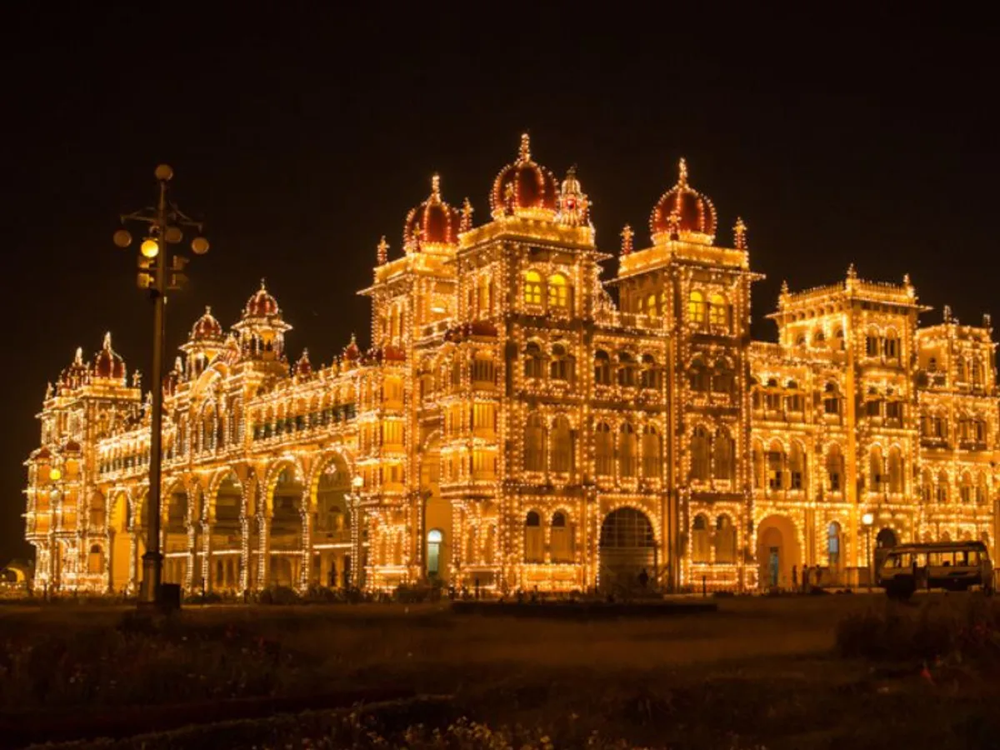

3. Goa

Goa is famous for its beautiful beaches, golden sunsets and peaceful coastal scenery.
Explore the beauty of Incredible India!
Nature | History | Beaches | Adventure

The Taj Mahal is a famous white marble monument and a symbol of eternal love.

Jaipur is known as the Pink City. It is famous for its beautiful forts, royal palaces and colourful markets.
Goa is famous for its beautiful beaches, golden sunsets and peaceful coastal scenery.

Kerala is known as God's Own Country. It is famous for green landscapes, coconut trees and peaceful backwaters.

Chennai is famous for its beautiful temples, Marina Beach and rich Tamil culture.

Tirumala is a famous spiritual destination surrounded by beautiful hills and a peaceful natural environment.

Kashmir is famous for its scenic beauty, snow-covered mountains, beautiful lakes and gardens.

Mysore is famous for its magnificent palaces, beautiful gardens and rich cultural heritage.
Experience the traditional music of India and enjoy its beautiful melodies.
Take a virtual journey through India's beautiful destinations, culture and nature.
Discover new destinations, explore different cultures and create unforgettable memories.
Thank you for exploring India with us ❤️
© 2026 Discover India | Travel • Explore • Experience